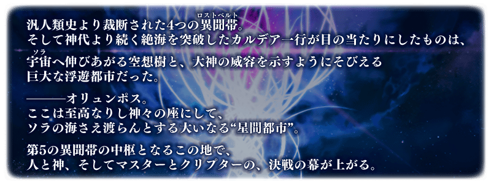
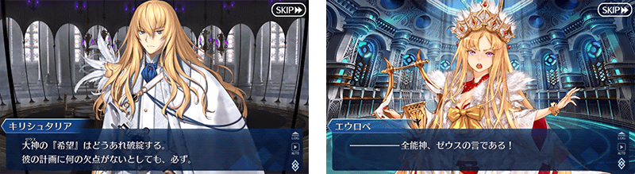
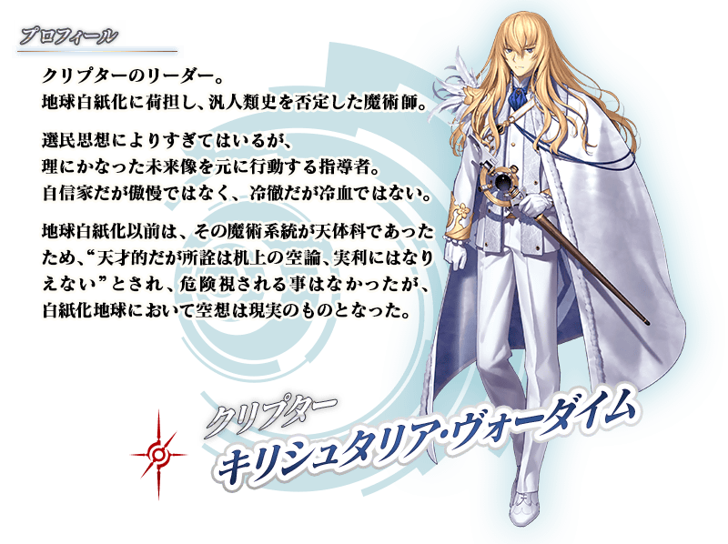

◆第2部 第5章「Lostbelt No.5 星間都市山脈 奧林帕斯 擊落神之日」預定開幕◆
「星間都市山脈 奧林帕斯 擊落神之日」的舞台是做為第5異聞帶中樞的奧林帕斯。
突破自神代延續的大海「亞特蘭提斯」，請享受在終於好不容易到達的眾神之座巨大都市奧林帕斯所展開的劇情！
※本頁面皆為開發中圖片。會有與實際圖片相異的情況。
◆公開時間◆
2020年4月9日(四) 17:00～
◆開放條件◆
通過第2部 第5章「Lostbelt No.5 神代巨神海洋 亞特蘭提斯 擊落神之日」後開放。
※不需要通過亞種特異點(從Ⅰ到Ⅳ)。

在「Fate/Grand Order」官方網站內首頁及Gallery，公開了第2部 第5章「Lostbelt No.5 星間都市山脈 奧林帕斯 擊落神之日」的電視廣告。敬請確認。
動畫製作：A-1 Pictures

自第2部 第5章「Lostbelt No.5 星間都市山脈 奧林帕斯 擊落神之日」追加2種新道具！
為新登場從者的技能強化及靈基再臨必要的道具。
主要能從於第2部 第5章「Lostbelt No.5 星間都市山脈 奧林帕斯 擊落神之日」主線關卡出現的敵人做為戰利品獲得。
其他還有，期間限定「奧林帕斯Pick Up召喚」預定舉辦！
另外，『「Lostbelt No.5 神代巨神海洋 亞特蘭提斯 擊落神之日」通過聲援宣傳活動』、『「Lostbelt No.5 星間都市山脈 奧林帕斯 擊落神之日」開幕前夕宣傳活動』同時舉辦！
關於詳情，請自下述橫幅確認。
■「奧林帕斯Pick Up召喚」詳細情報
 ※4月9日(四) 17:00圖片修正
※4月9日(四) 17:00圖片修正
■「Lostbelt No.5 神代巨神海洋 亞特蘭提斯 擊落神之日」通過聲援宣傳活動詳細情報

■「Lostbelt No.5 星間都市山脈 奧林帕斯 擊落神之日」開幕前夕宣傳活動詳細情報